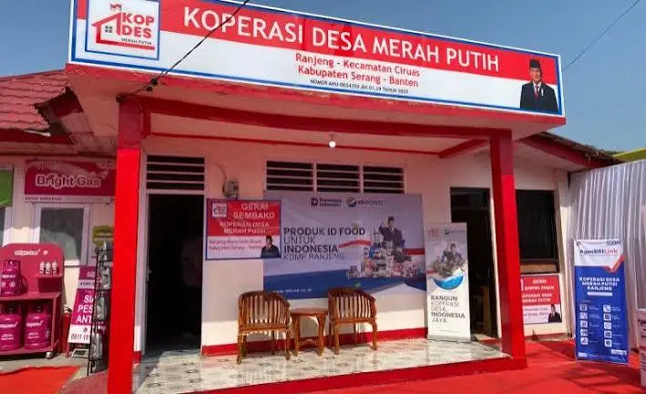

PROGRAM UNGGULAN PAK PRABOWO
Koperasi Desa
(Kopdes) Merah Putih
Koperasi Desa (Kopdes) hadir sebagai sarana pemberdayaan ekonomi masyarakat perdesaan berbasis gotong royong. Kopdes menjadi rantai utama penyerapan hasil tani, peternakan lokal, dan penyedia logistik bagi program nasional Makan Bergizi Gratis (MBG) untuk mencetak Generasi Emas Indonesia serta mengentaskan angka stunting secara nasional.
